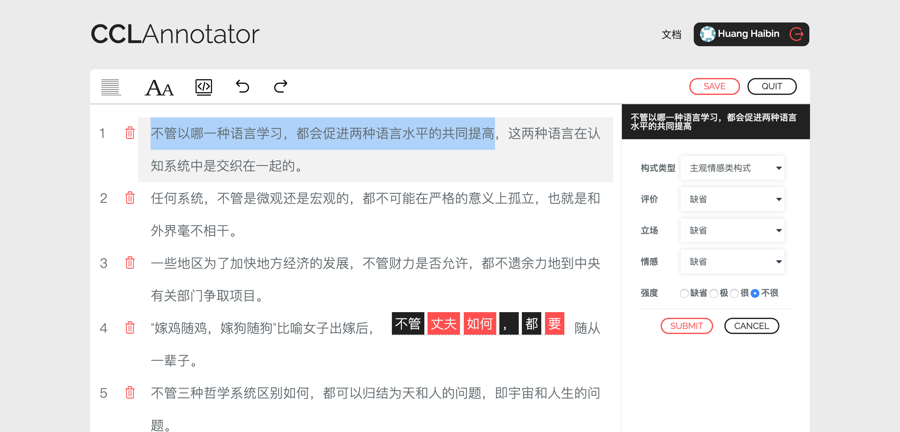
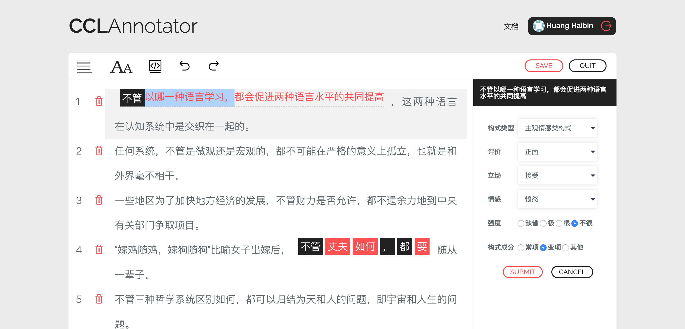
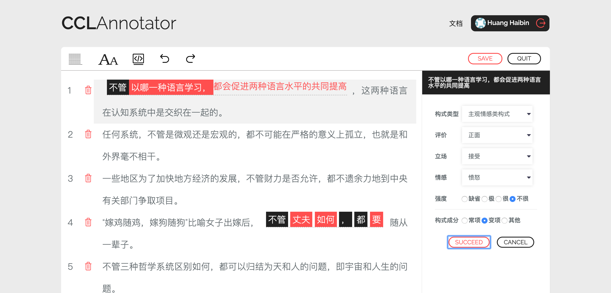

3. 标注指南¶
3.1. 标注工具介绍¶
在进入正式标注之前，我们首先对标注工具进行简要的介绍。标注工具可以分为三块：工具栏、语料区、菜单区。如下图所示：
- 工具栏
其中，工具栏处于最上方，分别包含
行距大小、字体大小、显示模式、撤销、重做等功能。标注人员能够点击并作相应调整。
注解
显示模式 分为可视化模式与源代码模式，用户能够随个人喜好自行切换。需要注意的是，可视化模式与源代码模式互不兼容：可视化模式针对语料标注主要依赖于鼠标操作；而源代码模式则要求直接修改 .xml 源代码。标注人员以源代码模式标注语料时，需小心谨慎，重点关注相应 xml 的标签及其格式。
对于 撤销 、 重做 其并非 CCLAnnotator 平台原生功能，而是移植了开源代码。需要注意的是，二者的生效条件在于标注人员已经对语料进行了一定的标注操作。
此外， CCLAnnotator 平台采用异步保存的方式，允许标注人员在标注或校对过程中，实时保存文件，即点击 SAVE 按钮。 点击 SAVE 按钮，服务器会对标注内容进行自动排序，将构式实例内容一致的句子收拢到一起，并按频次进行升序排列。
- 语料区
待标注/校对语料处于工具栏之下、菜单区之左的区域。当标注人员进行标注任务时，每一个句子左端均具备一个删除按钮，用于删除不合适的语料；而当标注人员进行校对任务时，每一个句子左端均具备一个勾选按钮，用于确认已校对的状态；同时，平台管理员进行任务审核时，审核界面与校对界面是一致的。
- 菜单区
右侧菜单区显示的是相应的标注选项，包括构式语义和构式形式标注两大类。构式语义模块包含构式类型及其所具备的相应属性，比如
主观情感类构式具备评价、立场、情感、强度四大属性；对于构式形式模块，其包括构式成分标注，即常项、变项、其他。需要注意的是，其他并非构式成分，但在具体的语言使用中，构式内部很有可能出现不属于构式的成分，因此，在工程层面，我们使用其他将之与真正的构式成分相区分。
3.2. 语料标注指引¶
为了节省标注成本，我们在开发 CCLAnnotator 构式语料标注平台的同时，设计了一套现代汉语构式形式自动标注算法，其能够粗略地从生语料中标注明显的构式实例，因此，标注人员接到的标注任务，往往即包含未经标注的生语料，也包含经过了粗标的语料。对于后者，标注人员不仅需要检查其形式标注的正确性，同时也要为其标注构式语义。
构式语义标注¶
对于 未经标注 的句子，标注人员需要用鼠标 选中 相应区域，此时，右侧菜单会出现选中的文字，标注人员需要确定其构式类型：
如图所示，当标注人员选择构式类型为 主观情感类 ，构式标注菜单会出现相应的属性，标注人员需要就各个属性选择相应的值，允许缺省值的存在。一旦确定取值之后，点击 SUBMIT ，构式语义就标注好了，同时构式实例也被确定了。
对于 自动标注 过的句子，标注人员只需用鼠标 单击 该构式实例内部的任意区域，此时，标注人员只需在右侧菜单区进行上述构式语义标注操作即可。
构式形式标注¶
对于 未经标注 的句子，当其构式语义已被标注，构式实例亦已确定，接下来便需要标注人员进行构式形式标注：在构式实例内部，用鼠标 选中 片段，此时右侧菜单区会出现构式形式标注选项：
而后点选相应的构式形式属性，并 SUBMIT 即可。
错误标注处理¶
对于标注错误， CCLAnnotator 构式语料标注平台亦提供了十分高效的处理工具。标注人员使用鼠标 单击 错误标注的构式实例，在相应实例上方会出现 删除 和 修改 按钮：
标注人员点击黑色 删除 按钮，则删除当前构式实例 整体 的标注信息；点击白色 修改 按钮，则删除当前构式实例 内部成分 的标注信息。而后，标注人员可以按照上述构式语义和构式形式标注流程进行操作。
标注菜单设置¶
对于现代汉语来说，显然不止一种 主观情感类 构式。随着标注规范愈加完善，构式标注菜单亦会愈加丰富。因此， CCLAnnotator 构式语料标注平台为平台管理员提供了开放的接口，其可以在管理后台对构式菜单进行扩展。
点击 + 号，平台管理员输入相应的值并提交，即可完成对标注菜单的扩展；同时，点击 管理 按钮，能够删除不合适的菜单选项。
标注菜单在后端以配置文件的形式呈现，其路径为 /CCLAnnotator/config/constructions.php。平台管理员在管理后台的操作最终会反馈到该文件中。其基本形式如下：
<?php
return [
'form' => [
'构式成分' => [
'mark' => 'components',
'view' => 'radio',
'name' => ['constant', 'variable', 'others'],
'content' => ['常项', '变项', '其他'],
],
],
'meaning' => [
'type' => [
'mark' => 'types',
'view' => 'select',
'name' => ['缺省', '主观情感类构式', ],
'content' => ['缺省', '主观情感类构式', ],
],
'elements' => [
'主观情感类构式' => [
'评价' => [
'mark' => 'evaluation',
'view' => 'radio',
'name' => ['default','positive', 'negative', 'neutral'],
'content' => ['缺省', '正面', '负面', '中立'],
],
'立场' => [
'mark' => 'standpoint',
'view' => 'radio',
'name' => ['default', 'accept', 'reject', 'whatever'],
'content' => ['缺省', '接受', '拒绝', '不置可否'],
],
'情感' => [
'mark' => 'emotion',
'view' => 'select',
'name' => ['default', 'like', 'anger', 'sad', 'terrify', 'hate', 'admire', 'custom'],
'content' => ['缺省','喜欢', '愤怒', '悲伤', '恐惧', '厌恶', '爱慕', '自定义'],
],
'强度' => [
'mark' => 'intensity',
'view' => 'radio',
'name' => ['default', 'extreme', 'very', 'not-very'],
'content' => ['缺省','极', '很', '不很'],
],
],
],
],
];
?>
其中，对构式类型，我们建议其 name 和 content 字段均保持中文同形，而对于其他属性， name 和 content 字段分别使用英文和中文命名。
警告
为了防止前端渲染出错，请平台管理人员严格遵守上述约定。
另外，菜单区各类特征的操作方式，存在两种方式备选：radio 和 select 。当特征取值数量较少时，推荐使用 radio ，反之，则推荐使用 select 。
当然，平台管理人员亦可以直接修改配置文件，并上传到服务器相应路径。